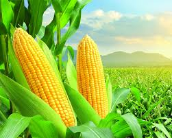
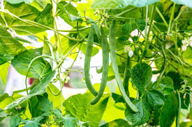
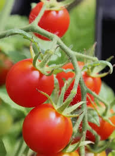
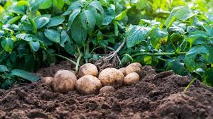
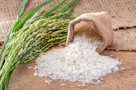
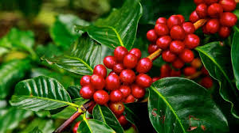
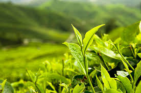

Every crop, one complete guide
Planting windows, soil needs, pests, diseases, market prices and community — all in one place.

Maize 🌽
A staple food crop widely grown for human consumption and animal feed, best in warm climates with well-drained soil.
View guide →
Beans 🫘
A protein-rich legume that improves soil fertility through nitrogen fixation; grows well with moderate rainfall.
View guide →
Tomatoes 🍅
A high-value vegetable crop needing warm weather, careful watering and protection from pests and fungal disease.
View guide →
Potatoes 🥔
A fast-growing tuber crop suited to cool to moderate climates with loose, well-drained soil.
View guide →
Rice 🌾
A major cereal grain grown in flooded or irrigated fields, needing consistent water and warm temperatures.
View guide →
Coffee ☕
A perennial cash crop grown in tropical highlands with rich, well-drained soil and careful pest management.
View guide →
Tea 🍃
A plantation crop for cool, high-altitude regions with regular rainfall and acidic, well-maintained soils.
View guide →